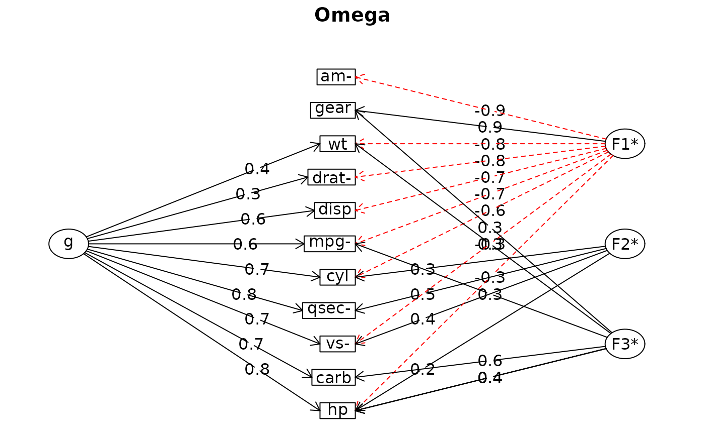

Parameters from PCA, FA, CFA, SEM
Source:R/methods_FactoMineR.R, R/methods_lavaan.R, R/methods_psych.R, and 1 more
model_parameters.principal.RdFormat structural models from the psych or FactoMineR packages.
Usage
# S3 method for PCA
model_parameters(
model,
sort = FALSE,
threshold = NULL,
labels = NULL,
verbose = TRUE,
...
)
# S3 method for FAMD
model_parameters(
model,
sort = FALSE,
threshold = NULL,
labels = NULL,
verbose = TRUE,
...
)
# S3 method for lavaan
model_parameters(
model,
ci = 0.95,
standardize = FALSE,
component = c("regression", "correlation", "loading", "defined"),
keep = NULL,
drop = NULL,
verbose = TRUE,
...
)
# S3 method for principal
model_parameters(
model,
sort = FALSE,
threshold = NULL,
labels = NULL,
verbose = TRUE,
...
)
# S3 method for omega
model_parameters(model, verbose = TRUE, ...)
# S3 method for sem
model_parameters(
model,
ci = 0.95,
ci_method = NULL,
bootstrap = FALSE,
iterations = 1000,
standardize = NULL,
exponentiate = FALSE,
p_adjust = NULL,
summary = getOption("parameters_summary", FALSE),
keep = NULL,
drop = NULL,
verbose = TRUE,
vcov = NULL,
vcov_args = NULL,
...
)Arguments
- model
Model object.
- sort
Sort the loadings.
- threshold
A value between 0 and 1 indicates which (absolute) values from the loadings should be removed. An integer higher than 1 indicates the n strongest loadings to retain. Can also be
"max", in which case it will only display the maximum loading per variable (the most simple structure).- labels
A character vector containing labels to be added to the loadings data. Usually, the question related to the item.
- verbose
Toggle warnings and messages.
- ...
Arguments passed to or from other methods.
- ci
Confidence Interval (CI) level. Default to
0.95(95%).- standardize
Return standardized parameters (standardized coefficients). Can be
TRUE(or"all"or"std.all") for standardized estimates based on both the variances of observed and latent variables;"latent"(or"std.lv") for standardized estimates based on the variances of the latent variables only; or"no_exogenous"(or"std.nox") for standardized estimates based on both the variances of observed and latent variables, but not the variances of exogenous covariates. Seelavaan::standardizedsolutionfor details.- component
What type of links to return. Can be
"all"or some ofc("regression", "correlation", "loading", "variance", "mean").- keep
Character containing a regular expression pattern that describes the parameters that should be included (for
keep) or excluded (fordrop) in the returned data frame.keepmay also be a named list of regular expressions. All non-matching parameters will be removed from the output. Ifkeepis a character vector, every parameter name in the "Parameter" column that matches the regular expression inkeepwill be selected from the returned data frame (and vice versa, all parameter names matchingdropwill be excluded). Furthermore, ifkeephas more than one element, these will be merged with anORoperator into a regular expression pattern like this:"(one|two|three)". Ifkeepis a named list of regular expression patterns, the names of the list-element should equal the column name where selection should be applied. This is useful for model objects wheremodel_parameters()returns multiple columns with parameter components, like inmodel_parameters.lavaan(). Note that the regular expression pattern should match the parameter names as they are stored in the returned data frame, which can be different from how they are printed. Inspect the$Parametercolumn of the parameters table to get the exact parameter names.- drop
See
keep.- ci_method
Method for computing degrees of freedom for confidence intervals (CI) and the related p-values. Allowed are following options (which vary depending on the model class):
"residual","normal","likelihood","satterthwaite","kenward","wald","profile","boot","uniroot","ml1","betwithin","hdi","quantile","ci","eti","si","bci", or"bcai". See section Confidence intervals and approximation of degrees of freedom inmodel_parameters()for further details. Whenci_method=NULL, in most cases"wald"is used then.- bootstrap
Should estimates be based on bootstrapped model? If
TRUE, then arguments of Bayesian regressions apply (see alsobootstrap_parameters()).- iterations
The number of bootstrap replicates. This only apply in the case of bootstrapped frequentist models.
- exponentiate
Logical, indicating whether or not to exponentiate the coefficients (and related confidence intervals). This is typical for logistic regression, or more generally speaking, for models with log or logit links. It is also recommended to use
exponentiate = TRUEfor models with log-transformed response values. Note: Delta-method standard errors are also computed (by multiplying the standard errors by the transformed coefficients). This is to mimic behaviour of other software packages, such as Stata, but these standard errors poorly estimate uncertainty for the transformed coefficient. The transformed confidence interval more clearly captures this uncertainty. Forcompare_parameters(),exponentiate = "nongaussian"will only exponentiate coefficients from non-Gaussian families.- p_adjust
Character vector, if not
NULL, indicates the method to adjust p-values. Seestats::p.adjust()for details. Further possible adjustment methods are"tukey","scheffe","sidak"and"none"to explicitly disable adjustment foremmGridobjects (from emmeans).- summary
Logical, if
TRUE, prints summary information about the model (model formula, number of observations, residual standard deviation and more).- vcov
Variance-covariance matrix used to compute uncertainty estimates (e.g., for robust standard errors). This argument accepts a covariance matrix, a function which returns a covariance matrix, or a string which identifies the function to be used to compute the covariance matrix.
A covariance matrix
A function which returns a covariance matrix (e.g.,
stats::vcov())A string which indicates the kind of uncertainty estimates to return.
Heteroskedasticity-consistent:
"vcovHC","HC","HC0","HC1","HC2","HC3","HC4","HC4m","HC5". See?sandwich::vcovHC.Cluster-robust:
"vcovCR","CR0","CR1","CR1p","CR1S","CR2","CR3". See?clubSandwich::vcovCR.Bootstrap:
"vcovBS","xy","residual","wild","mammen","webb". See?sandwich::vcovBS.Other
sandwichpackage functions:"vcovHAC","vcovPC","vcovCL","vcovPL".
- vcov_args
List of arguments to be passed to the function identified by the
vcovargument. This function is typically supplied by the sandwich or clubSandwich packages. Please refer to their documentation (e.g.,?sandwich::vcovHAC) to see the list of available arguments.
Details
For the structural models obtained with psych, the following indices are present:
Complexity (Hoffman's, 1978; Pettersson and Turkheimer, 2010) represents the number of latent components needed to account for the observed variables. Whereas a perfect simple structure solution has a complexity of 1 in that each item would only load on one factor, a solution with evenly distributed items has a complexity greater than 1.
Uniqueness represents the variance that is 'unique' to the variable and not shared with other variables. It is equal to
1 – communality(variance that is shared with other variables). A uniqueness of0.20suggests that20%or that variable's variance is not shared with other variables in the overall factor model. The greater 'uniqueness' the lower the relevance of the variable in the factor model.MSA represents the Kaiser-Meyer-Olkin Measure of Sampling Adequacy (Kaiser and Rice, 1974) for each item. It indicates whether there is enough data for each factor give reliable results for the PCA. The value should be > 0.6, and desirable values are > 0.8 (Tabachnick and Fidell, 2013).
Note
There is also a
plot()-method
for lavaan models implemented in the
see-package.
References
Kaiser, H.F. and Rice. J. (1974). Little jiffy, mark iv. Educational and Psychological Measurement, 34(1):111–117
Pettersson, E., and Turkheimer, E. (2010). Item selection, evaluation, and simple structure in personality data. Journal of research in personality, 44(4), 407-420.
Revelle, W. (2016). How To: Use the psych package for Factor Analysis and data reduction.
Tabachnick, B. G., and Fidell, L. S. (2013). Using multivariate statistics (6th ed.). Boston: Pearson Education.
Rosseel Y (2012). lavaan: An R Package for Structural Equation Modeling. Journal of Statistical Software, 48(2), 1-36.
Merkle EC , Rosseel Y (2018). blavaan: Bayesian Structural Equation Models via Parameter Expansion. Journal of Statistical Software, 85(4), 1-30. http://www.jstatsoft.org/v85/i04/
Examples
# \donttest{
library(parameters)
if (require("psych", quietly = TRUE)) {
# Principal Component Analysis (PCA) ---------
pca <- psych::principal(attitude)
model_parameters(pca)
pca <- psych::principal(attitude, nfactors = 3, rotate = "none")
model_parameters(pca, sort = TRUE, threshold = 0.2)
principal_components(attitude, n = 3, sort = TRUE, threshold = 0.2)
# Exploratory Factor Analysis (EFA) ---------
efa <- psych::fa(attitude, nfactors = 3)
model_parameters(efa,
threshold = "max", sort = TRUE,
labels = as.character(1:ncol(attitude))
)
# Omega ---------
omega <- psych::omega(mtcars, nfactors = 3)
params <- model_parameters(omega)
params
summary(params)
}

#> Composite | Total Variance (%) | Variance due to General Factor (%) | Variance due to Group Factor (%)
#> ------------------------------------------------------------------------------------------------------
#> g | 97.28 | 56.64 | 26.42
#> F1* | 90.12 | 31.07 | 59.05
#> F2* | 91.37 | 69.32 | 22.04
#> F3* | 87.36 | 59.65 | 27.71
# FactoMineR ---------
if (require("FactoMineR", quietly = TRUE)) {
model <- FactoMineR::PCA(iris[, 1:4], ncp = 2)
model_parameters(model)
attributes(model_parameters(model))$scores
model <- FactoMineR::FAMD(iris, ncp = 2)
model_parameters(model)
}
#> Warning: ggrepel: 98 unlabeled data points (too many overlaps). Consider increasing max.overlaps
#> Warning: ggrepel: 98 unlabeled data points (too many overlaps). Consider increasing max.overlaps
#> # Loadings from Factor Analysis (no rotation)
#>
#> Variable | Dim.1 | Dim.2 | Complexity
#> --------------------------------------------
#> Sepal.Length | 0.75 | 0.07 | 1.02
#> Sepal.Width | 0.23 | 0.51 | 1.41
#> Petal.Length | 0.98 | 1.32e-03 | 1.00
#> Petal.Width | 0.94 | 0.01 | 1.00
#> Species | 0.96 | 0.75 | 1.88
#>
#> The 2 latent factors accounted for 86.87% of the total variance of the original data (Dim.1 = 64.50%, Dim.2 = 22.37%).
# }
# lavaan
library(parameters)
# lavaan -------------------------------------
if (require("lavaan", quietly = TRUE)) {
# Confirmatory Factor Analysis (CFA) ---------
structure <- " visual =~ x1 + x2 + x3
textual =~ x4 + x5 + x6
speed =~ x7 + x8 + x9 "
model <- lavaan::cfa(structure, data = HolzingerSwineford1939)
model_parameters(model)
model_parameters(model, standardize = TRUE)
# filter parameters
model_parameters(
model,
parameters = list(
To = "^(?!visual)",
From = "^(?!(x7|x8))"
)
)
# Structural Equation Model (SEM) ------------
structure <- "
# latent variable definitions
ind60 =~ x1 + x2 + x3
dem60 =~ y1 + a*y2 + b*y3 + c*y4
dem65 =~ y5 + a*y6 + b*y7 + c*y8
# regressions
dem60 ~ ind60
dem65 ~ ind60 + dem60
# residual correlations
y1 ~~ y5
y2 ~~ y4 + y6
y3 ~~ y7
y4 ~~ y8
y6 ~~ y8
"
model <- lavaan::sem(structure, data = PoliticalDemocracy)
model_parameters(model)
model_parameters(model, standardize = TRUE)
}
#> # Loading
#>
#> Link | Coefficient | SE | 95% CI | z | p
#> --------------------------------------------------------------------
#> ind60 =~ x1 | 0.92 | 0.02 | [0.88, 0.97] | 40.08 | < .001
#> ind60 =~ x2 | 0.97 | 0.02 | [0.94, 1.01] | 59.14 | < .001
#> ind60 =~ x3 | 0.87 | 0.03 | [0.81, 0.93] | 28.09 | < .001
#> dem60 =~ y1 | 0.85 | 0.04 | [0.77, 0.93] | 20.92 | < .001
#> dem60 =~ y2 (a) | 0.69 | 0.06 | [0.57, 0.81] | 11.58 | < .001
#> dem60 =~ y3 (b) | 0.76 | 0.05 | [0.66, 0.86] | 14.70 | < .001
#> dem60 =~ y4 (c) | 0.84 | 0.04 | [0.76, 0.92] | 20.12 | < .001
#> dem65 =~ y5 | 0.82 | 0.04 | [0.73, 0.90] | 18.52 | < .001
#> dem65 =~ y6 (a) | 0.75 | 0.05 | [0.65, 0.86] | 14.01 | < .001
#> dem65 =~ y7 (b) | 0.80 | 0.05 | [0.71, 0.89] | 17.40 | < .001
#> dem65 =~ y8 (c) | 0.83 | 0.04 | [0.75, 0.91] | 19.79 | < .001
#>
#> # Regression
#>
#> Link | Coefficient | SE | 95% CI | z | p
#> ------------------------------------------------------------------
#> dem60 ~ ind60 | 0.45 | 0.10 | [0.25, 0.65] | 4.33 | < .001
#> dem65 ~ ind60 | 0.19 | 0.07 | [0.05, 0.33] | 2.64 | 0.008
#> dem65 ~ dem60 | 0.88 | 0.05 | [0.78, 0.98] | 17.24 | < .001
#>
#> # Correlation
#>
#> Link | Coefficient | SE | 95% CI | z | p
#> -------------------------------------------------------------
#> y1 ~~ y5 | 0.28 | 0.14 | [ 0.00, 0.56] | 1.97 | 0.049
#> y2 ~~ y4 | 0.29 | 0.11 | [ 0.07, 0.52] | 2.55 | 0.011
#> y2 ~~ y6 | 0.36 | 0.10 | [ 0.17, 0.54] | 3.71 | < .001
#> y3 ~~ y7 | 0.17 | 0.13 | [-0.09, 0.43] | 1.26 | 0.208
#> y4 ~~ y8 | 0.11 | 0.13 | [-0.14, 0.36] | 0.86 | 0.388
#> y6 ~~ y8 | 0.34 | 0.11 | [ 0.12, 0.55] | 3.08 | 0.002